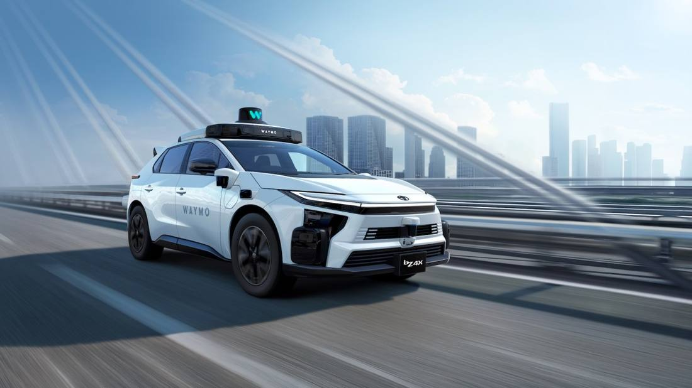

Toyota Will Build Cars for Waymo, Starting on Japanese Roads in 2027
On October 30, 2026, Toyota and Waymo announced the next phase of their partnership: Toyota will build the 2027 bZ4X at its Takaoka plant with Waymo's self-driving system integrated, testing and validation in Japan in 2027, then expansion to markets including the UK.

- 01THE PRELUDE — April 2025: the two companies sign a preliminary exploration agreement.
- 02THE DEAL — October 30, 2026: the bZ4X supply programme is announced.
- 03THE FACTORY — The Takaoka plant builds the vehicles and integrates Waymo's system.
WHAT HAPPENEDWhat Happened
The partnership began with a preliminary agreement in April 2025; 18 months later it has moved into concrete execution. Toyota will build the 2027 bZ4X electric SUV and integrate Waymo's autonomous driving hardware and systems on the same production line at its Takaoka plant, with ride-hailing-specific design touches such as automatic doors.
The timeline has two stages. Testing and validation begin in Japan in 2027, with what the companies describe only as a small initial fleet. After validation in Japan, the programme expands to the UK and other markets where Waymo operates. The UK is still awaiting an operating licence, while Jaguar I-PACE test vehicles continue to run in London.
Waymo's expansion pace is also a matter of record. Waymo reportedly plans to raise a new US$5 billion loan to grow its commercial fleet from 4,000 vehicles to 20,000 by the end of next year. Toyota's supply solves the vehicle-supply problem in right-hand-drive markets, not a problem with the self-driving technology itself.
ONE ROOF, TWO JOBSOne Factory, Building Cars and Installing Systems at Once
The traditional model is for the carmaker to hand over vehicles and the self-driving company to retrofit them. The Takaoka plant puts both jobs on one line: the vehicle is designed for ride-hailing from the moment it leaves the factory, cutting retrofit costs and consistency problems.
The model is also new for Toyota. For the first time, a carmaker is reserving an assembly step in its own factory for another company's self-driving system, and the boundary of quality responsibility needs to be spelled out in the contract.
RIGHT-HAND FIRSTJapan First, Then the UK: The Order Comes Down to Driving Side
Japan and the UK are both right-hand-drive markets, so vehicle specifications can be shared. Validating in Japan first, then taking the same car to the UK, gives the highest reuse across R&D and the supply chain.
The order also reflects regulatory reality. Testing in London has been running for months, but a commercial operating licence has not yet been granted. Vehicles being ready does not mean the service can open immediately.
SUPPLY AS BOTTLENECKFor Waymo's Expansion, the Bottleneck Is Vehicle Supply
Waymo's fleet target is 20,000 vehicles by the end of next year, five times the current number. Software alone is not enough; it needs carmakers able to supply adapted vehicles steadily and at volume. Toyota is being lined up for exactly that gap.
For Toyota, the deal means more than a batch of orders. If autonomous ride-hailing becomes a mainstream way to travel, the carmaker's role shifts from selling cars to supplying them, and the profit structure changes with it.
THE SHIFTWhat Changed
SIGNAL JUDGMENT — ANALYSISThe Self-Driving Race Is Becoming a Race for Vehicle Supply
Tokenta Signal's judgment is unchanged: in going to Toyota, Waymo is not buying a car, it is buying volume supply capacity in right-hand-drive markets. Whoever can supply vehicles reliably gets to scale the fleet first.
WHAT REMAINS UNCERTAINWhat Remains Uncertain
EVIDENCEEvidence
The original report confirms that on October 30, 2026, Toyota and Waymo announced the 2027 bZ4X will be built at the Takaoka plant with Waymo's system integrated, testing and validation in Japan first in 2027, then expansion to right-hand-drive markets including the UK.
PRIMARY SOURCESPrimary Sources
- TechCrunch: Waymo taps Toyota to supply robotaxis for Japan and the UK
https://techcrunch.com/2026/10/30/waymos-next-robotaxi-will-be-a-toyota-bz4x-destined-for-japan-and-the-uk/ - Silicon Report: Waymo will test autonomous Toyota bZ4X fleet in Japan
https://www.siliconreport.com/waymo-will-test-autonomous-toyota-bz4x-fleet-in-japan
RELATEDRelated Intelligence
- Agility Robotics Closes SPAC Deal, Set to Trade on Nasdaq as AGLT on November 5
- Uber Books $59.8 Billion in Q3 and Puts a Number on Autonomy: 700 Driverless Vehicles by Year-End
- South Korea opens its first humanoid robot data factory: 12 robots do the work first, and bank the data
- Tesla Robotaxi Rolls Into Fort Worth, Its Seventh City